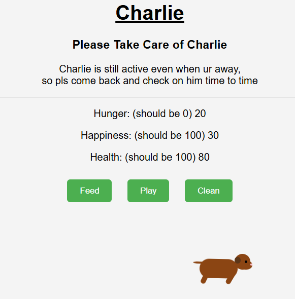
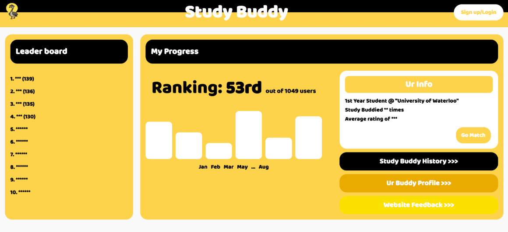
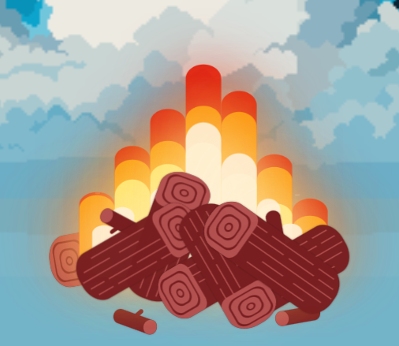
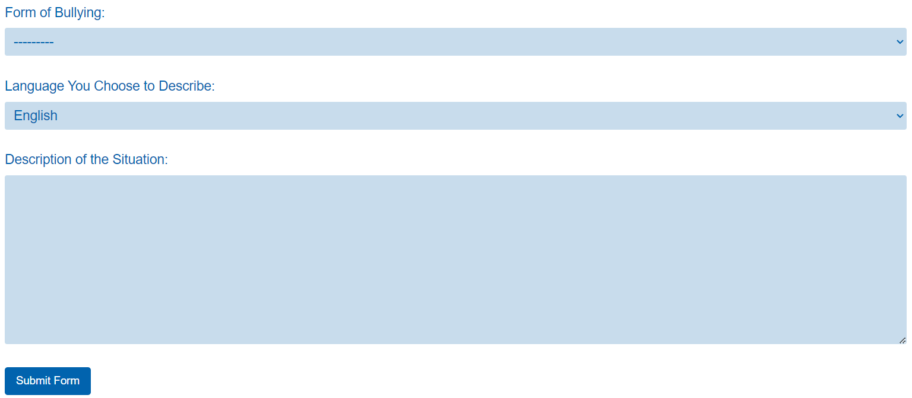
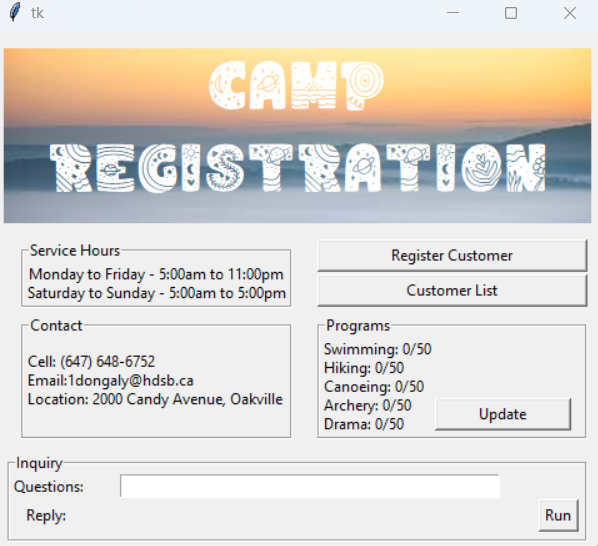
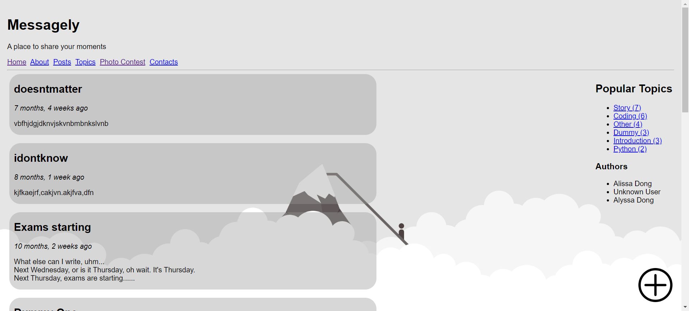
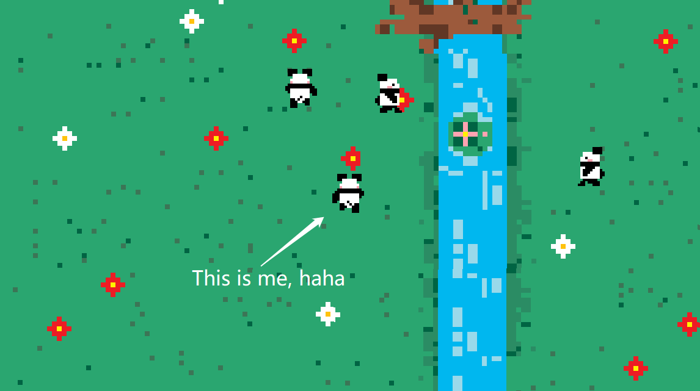
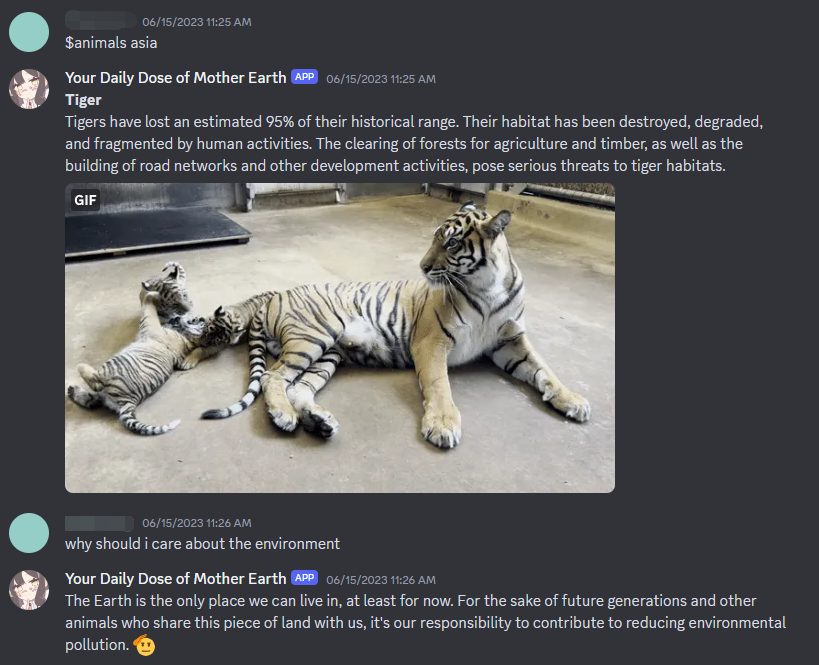

Built a Django application that integrates the Google Maps API to generate interactive maps for sharing accessibility establishments. Enhanced functionality with a camera feature that uses EasyOCR for image recognition and Cohere’s text-to-speech API to read out information from photos, promoting inclusivity and accessibility.
Developed a game to care for a virtual pet dog, Charlie, with real-time stat tracking for hunger, happiness, and cleanliness. Programmed Charlie’s movements using CSS animations and utilized Flask to manage and update stats dynamically
Study Buddy matches students with ideal study partners based on shared academic goals, enrolled courses, learning styles, and availability. It also schedules study sessions, gamifies progress with leaderboards, and stores profiles and ratings for better matchmaking. Studdy Buddy is programmed using the Django Framework and a matching alogrithm (K-means clustering) in Python is also implemented.
The webpage you are viewing right now! This webpage was coded with only HTML, CSS, and JavaScript. There are no frameworks and no API's. While coding this website, it was fascinating to learn how I can create short animations through CSS and HTML only. I really enjoyed the challenge! Can you believe that the fire was programmed using purely HTML and CSS?!
A website I programmed with my best friend Bianca! This website's purpose is to report bullying to different schools and organizations. What's special is that the website features auto-translation to English, which removes possible language barriers. After filling out the form, an automated email is sent to the school from the PTERYX Foundation of Culture and Education, where the organization will continue to provide assistance in resolving the bullying problem. This website is programmed in Python using the Django Framework, uses SQLite3 for its database, and is hosted on Vercel. [link]
A project I worked on when I was in Grade 11! It's a simple Tkinter Camp Registration UI coded only using Python. The window allows you to register new customers, remove customers, and inquire about the UI. I also loved designing the window, making sure it wasn't just bland gray and white.
Another project I worked on in Grade 11! This is a webapp programmed using Django! Messagely has features such as posting blogs, liking or disliking comments, participating in a contest that will never have results, and navigating through posts by selecting authors and topics! This website is hosted on Azure. [Link]
Yet another G11 project, the Panda Game, is created using Godot's Engine and programmed in GDScript! It's a game where you can walk around the map as a panda along with your other panda NPC friends! The assets were also created by me!
The most ancient project of them all is the Daily Dose of Mother Earth Discord Bot! This bot was also created in G11 using Python and the Discord API. At that time, I was really interested in AI, so I created an algorithm that collects the user's input and runs it through the keywords in the database (it was a list; I had no idea how to use databases back then), generates accuracy values, and returns a response with the highest accuracy value (so that the response makes logical sense)!
